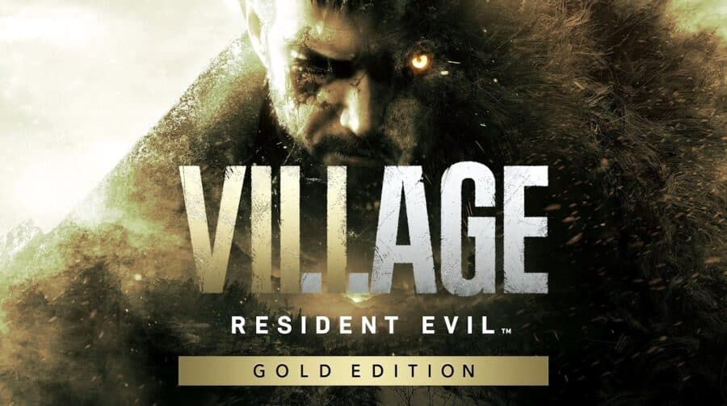
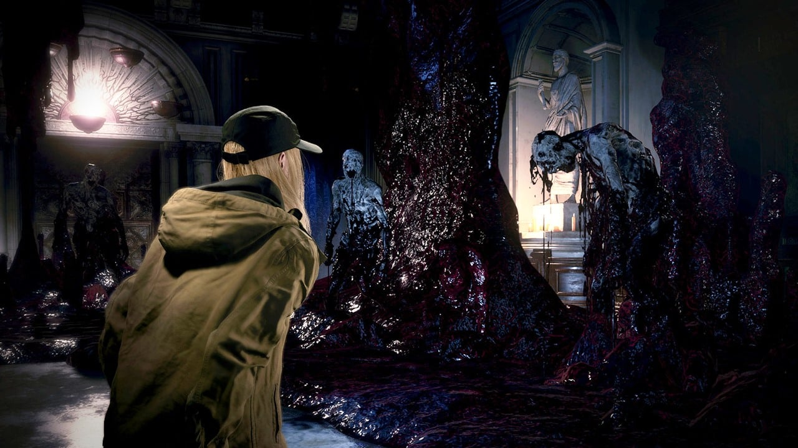
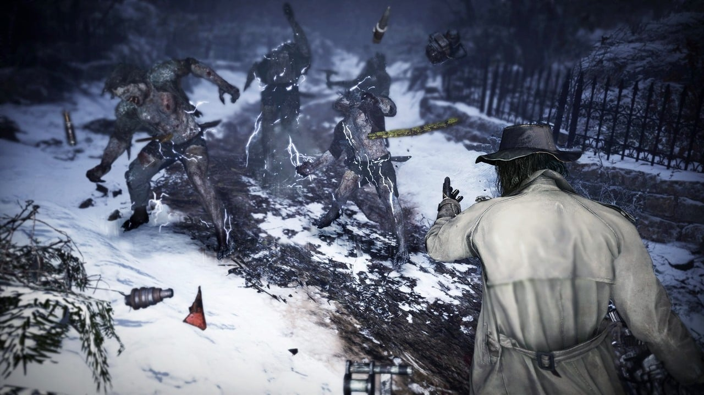
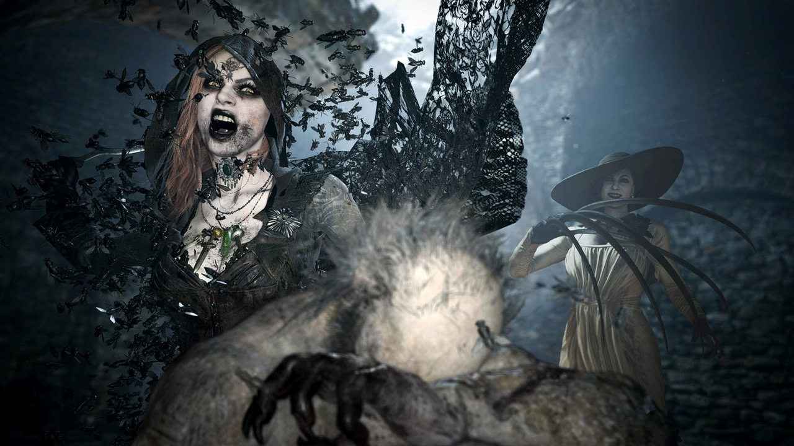

Resident Evil Village Gold Edition: vale a pena?
A Expansão de Winters traz novidades instigantes e motivos de sobra para um segundo round no vilarejo
Desde Resident Evil 5 (com exceção do sexto game), a Capcom tem o costume de lançar versões aprimoradas para os títulos numerados da saga — um jeito inteligente de estender a vida útil da produção. Já que é tradição, com Resident Evil Village Gold Edition não seria diferente.
Com mais de 6,4 milhões de unidades vendidas do game, a editora japonesa viu uma recepção calorosa da crítica e dos fãs no ano passado. E não é para menos: o jogo foi considerado como uma das maiores estreias no PS5 em 2021.
Para aproveitar um pouco mais essa boa fase, por que não lançar novidades para os fãs revisitarem a aventura de Ethan, não é mesmo? E olha a boa notícia: o que não falta em Resident Evil Village Gold Edition é conteúdo que justifique o segundo round.
A “Expansão dos Winters” pode ser adquirida de duas maneiras: à parte (para quem já tem o jogo base) por R$ 94,90 na PS Store ou através de Resident Evil Village Gold Edition — um conjunto completo.
Os conteúdos incluem o DLC “Sombras de Rose” (que conta a história da filha de Ethan anos após os acontecimentos da trama principal), novidades instigantes para o Mercenários e um modo em terceira pessoa para a campanha.
Sombras de Rose agrega e foge do convencional
Sombras de Rose foge um pouco das raízes da série para apostar em algo mais fantasioso e sobrenatural, também com uma pitada de “multiverso” na composição. Vale lembrar que seu gameplay, diferente da campanha principal, é em terceira pessoa.
Sem detalhes miúdos para não estragar a experiência, mas o Megamiceto, parasita da trama de Resident Evil Village Gold Edition, absorve as memórias de todas as vidas ao seu alcance — e o organismo usou toda essa informação para criar uma consciência coletiva.
Rose tem sérios problemas sociais por conta de suas individualidades e a suposta cura só pode ser encontrada nesse “reino”. Muita coisa se materializa na consciência, incluindo armas, itens, monstros que sugam sua alma no melhor estilo Dementador (alô, fãs de Harry Potter) e até velhos conhecidos…
Há novas mecânicas envolvendo os poderes de Rose, que dão uma dinâmica ainda mais interessante ao gameplay. Seu kit de habilidades é muito bem aproveitado, tanto na hora do combate quanto na resolução dos puzzles — e são vários durante a jogatina, que leva cerca de três horas. A diversidade nos desafios impressiona, e o jogo te recompensa bem por todos eles.
Michael, um habitante dessa consciência, guia Rose por boa parte do trajeto através de frases, criando novas entradas e auxiliando a garota em sua jornada. Além disso, há diversos momentos tensos e uma sensação única de perseguição — coisa que a franquia é craque em proporcionar.
Se comparado ao equivalente de Resident Evil 7, o DLC “Not a Hero”, que colocava o Chris Redfield “Luciano Huck” para matar Mofados na propriedade dos Bakers, Sombras de Rose mostra que a Capcom está dedicando uma atenção extra nesse tipo de conteúdo.
É uma experiência bem divertida e que incrementa a história de Resident Evil Village Gold Edition — concluindo com chave de ouro a saga dos Winters na franquia.
Equipe de peso chegando ao modo Mercenários
Outro destaque de Resident Evil Village Gold Edition é o elenco de novos personagens chegando ao modo Mercenários. Antes, apenas Ethan e seis fases estavam disponíveis. Agora, a Capcom trouxe muita coisa legal para quem gosta desse tipo de jogo.
Chris Redfield
O herói da franquia, Chris Redfield, agora é uma das opções disponíveis. Seu arsenal militar e força bruta traz muita segurança para quem está jogando, afinal, seu soco desestabiliza a maioria dos inimigos.
Vale mencionar: Chris já vem desbloqueado na nova expansão, então facilita bastante na hora de liberar os outros dois que trataremos a seguir.
Karl Heisenberg
A adição de Karl Heisenberg é uma das tacadas mais certeiras da Capcom neste tipo de experiência até hoje. Além do martelo e a possibilidade de lançar serras de aço, suas habilidades permitem que ele crie um campo de força e puxe os oponentes com adereços metálicos para a sua direção.
É bom demais puxar grupos de inimigos no melhor estilo Magneto para eliminá-los com uma marretada energizada, ainda mais se estiver equipado com o seu especial: um monstro kamikaze que explode tudo à sua volta.
Alcina Dimitrescu
A Lady Dimitrescu, que tomou os holofotes no pré-lançamento no ano passado, também está disponível em Resident Evil Village Gold Edition — e jogar com ela é uma experiência bastante peculiar.
Espere por muita diversão e matança desenfreada controlando a duquesa. O kit de habilidades é um dos pontos fortes: ela pode usar garras e moscas para dar dano comum, assim como lançar sua penteadeira gigante em cima dos inimigos com o seu especial. Por fim, também pode invocar suas filhas para o combate.
Como há versões ainda mais difícil das fases, então fica bem acessível conseguir um bom rank nelas usando qualquer um dos dois irmãos ali de cima.
Modo em terceira pessoa dá novos ares ao jogo
Resident Evil 7 foi duramente criticado por alguns fãs em sua estreia por conta da perspectiva em primeira pessoa. Apesar de a sequência também ser no mesmo padrão, agora faltam motivos para reclamar: Resident Evil Village Gold Edition conta com um modo em terceira pessoa.
A tradicional câmera por cima do ombro dá motivos de sobra para uma segunda jogatina da campanha principal, enquanto torna a experiência algo ainda mais familiar aos fãs da velha guarda. Mesmo que não seja inédito, a visão panorâmica proporciona novos ares à aventura de Ethan.
Como Resident Evil Village Gold Edition é mais voltado para a ação, diferente do sétimo título, o impacto dessa perspectiva é notável. Agora é muito mais fácil olhar tudo à sua volta e realizar ações com mais precisão, principalmente nas lutas contra chefões e em embates contra grupos de inimigos — momentos onde é preciso flexibilidade para mover a câmera e olhar ao redor.
Devido às semelhanças no escopo, a jogatina na perspectiva pode ser um ótimo aquecimento para o remake de Resident Evil 4 — principalmente nas áreas do castelo Dimitrescu e do vilarejo, já que lembram muito algumas das fases do clássico.
Apesar dos elogios, o modo não é perfeito e tem seus “poréns”: muitas (senão todas) das cutscenes do game ainda estão em primeira pessoa, passando a sensação de uma experiência incompleta. Além disso, a Capcom insistiu até o fim na estratégia de não mostrar o rosto de Ethan por completo — mesmo em seu seus momentos finais na franquia.
Resident Evil Village Gold Edition: vale a pena?
Resident Evil Village Gold Edition traz um pacotão de novidades para fã nenhum colocar defeito. A expansão dá motivos de sobra para se aventurar mais uma vez na pele de Ethan Winters — embora a Capcom tenha perdido a última chance de mostrar o rosto do personagem.
São adições muito bem-vindas que valem o seu tempo, principalmente se você ainda não jogou o game — e para quem já o possui na biblioteca, o preço do DLC também é bem convidativo na PS Store.
Com isso, Resident Evil Village Gold Edition marca o fim dos Winters na franquia — uma conclusão digna para uma jornada que começou na propriedade dos Bakers em 2017. Agora, quais serão os planos da Capcom para a série principal? Mais perspectiva em primeira pessoa e survival horror? Mais Chris Redfield? Bom, só nos resta esperar.
Fonte:MeuPlastation